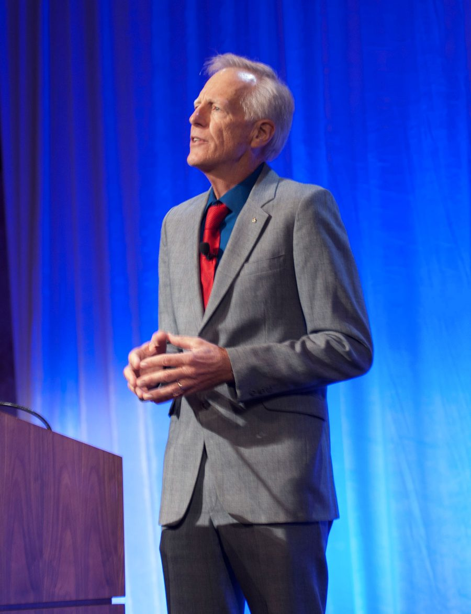

Speaking: where Mike has presented the paper
In brief
Mike first presented Lessons Learned and Murphy’s Corollary at the SETP West Coast Section Symposium in March 2015, and gave it fifteen times by November 2018, to test pilots, hang-glider pilots and aerospace companies. In May 2024 he discussed it with Art Tomassetti on On Condition, the Flight Test Safety Committee’s podcast.
Where the paper has been presented
| Date | Venue |
|---|---|
| March 27, 2015 | SETP West Coast Section Symposium, San Diego |
| May 2, 2015 | Wills Wing demo day, Crestline Soaring Society |
| May 5, 2015 | Flight Test Safety Workshop, Scottsdale |
| May 16, 2015 | Kitty Hawk Kites Spectacular |
| September 24, 2015 | SETP 59th Annual Symposium, Anaheim |
| March 11, 2016 | USHPA Board of Directors |
| April 15, 2016 | Wills Wing customer and dealer event, Wallaby Ranch flight park, Florida |
| May 13, 2016 | Virgin Galactic |
| June 25, 2016 | Sylmar Hang Gliding |
| July 3, 2016 | Lookout Mountain |
| July 18, 2016 | Scaled Composites |
| July 28, 2016 | EAA AirVenture, Oshkosh. Earlier the same day Mike gave a brief keynote at the Flight Advisors Breakfast, a short summary of the talk, and presented the SETP/EAA Spirit of Flight Awards. |
| September 1, 2016 | Colorado Fly Week |
| January 16, 2018 | Gulfstream Aerospace, the keynote of its Safety Stand Down day, Savannah |
| November 3, 2018 | Pilot Forum, Sunnyvale |
Coming up: December 11, 2026, the National Test Pilot School, Mojave, for the current class: the first presentation since November 2018.
To invite Mike to speak to your group, see Contact.
What audiences said

One of the most thought-provoking and insightful presentations I’ve seen in a long time. Todd Ericson, President, Society of Experimental Test Pilots
Mike has a great combination of knowledge, pragmatic experience and dry wit and gave a fascinating presentation that had the audience spellbound. It’s still one of the most talked about presentations ever. Mark Stucky, Past President, Society of Experimental Test Pilots; Lead Pilot, Virgin Galactic’s SpaceShipTwo
One of the most spectacular presentations I’d ever seen at the symposium. All of the members of my squadron, together, after that presentation was complete, we came back and talked about our own processes, things that we can do better. The whole idea that you can make the wrong decision, and get the right result on the back end of it really blew our minds. We use that now as a means with which to check ourselves and make sure that even if we’re getting the right result, was it still the right decision. Randy Gordon, Test Pilot, Member, Society of Experimental Test Pilots
We had our safety day here yesterday at RAAF Williamtown. I presented your video to approximately 200 members from 42 Wing. The group included aircrew, maintenance staff, engineers and support staff. Following the video I led a discussion on how it applies to our operation. Our people here certainly took away a lot of your well thought out points for consideration in their various roles. I have already had a lot of very positive feedback since the discussion, including comments on the high quality of your delivery. Thank you very much for allowing me to use your presentation. I believe it has made an impact on the workforce here that will make them look at how they do business and hopefully lead to a positive impact on our safety management system. Simon Freer, SQNLDR, 42 Wing Aviation Safety Officer, RAAF Base Williamtown, NSW
Would love for you to do the SETP presentation - besides wanting to see it again I feel it would be very beneficial for my staff as well as all pilots to watch it. Your presentation is very thought-provoking and possibly the best risk management work I have been exposed to – ever. Matt Taber, Owner, Lookout Mountain Flight Park
From the testimonials on the original meiersafe.com (January 2017), reused with Mike’s OK; titles as given there.
Two versions of the talk
The Anaheim talk ran 25 minutes, followed by questions. The paper follows its form, with material that didn’t fit the time added in indented italics: The paper.
The hour-long version, given at Gulfstream Aerospace in January 2018, adds the 2015 certification launch and the hard questions, among them “Is 100% safety possible?”
The podcast
Mike discussed the paper with Art Tomassetti on On Condition, the Flight Test Safety Committee’s podcast, episode 54, “Go or No Go” (May 2024). The committee’s podcast page lists the paper against the episode.
Listen: EP 54 – Go Or No Go, On Condition: The Flight Test Safety Podcast, May 30, 2024.
The talk on video
Questions after the Anaheim talk
Below: transcribed from SETP’s recording, September 24, 2015 (25:17 to 32:01), and lightly edited for reading. Questioners are not named in the recording. Two passages in one question could not be made out and are marked [inaudible].
Question: Not a question so much as an observation. NASA had some of the best scientists and decision makers, and reviews on these programs. Do you think they missed all this, or is it the culture that set them up to do that?
Mike Meier: I think that’s a very complex question, and I think they attempted to answer it in the later accident reports. It’s interesting: if you read the Apollo 204 Review Board report, it is almost entirely about the technical issues that led to the fire. I quoted some of Frank Borman’s comments that relate to the decision making, because that’s the point of my paper, but the report itself doesn’t really have any of that in it. It goes on and on about the technical issues. By the time you get to Challenger, they start looking, as Richard Feynman observed, at the decision making. And by the time you get to Columbia, there is a real frustration.
I believe it was Sally Ride who was on both the Challenger and the Columbia review boards. There is a whole section in the Columbia accident report where they talk about echoes of Challenger, and they even go back and talk about Apollo 1. Those accidents were on average 18 or 19 years apart, and they all occurred in January or February. We might conclude: just don’t launch anything in January or February, 18 years after the last one. That could be the conclusion.
But I think that, yes, they missed it. They missed it because I think two things are true about this process. One is that we’re at a disadvantage because we underestimate the challenge we’re up against. We underestimate the power of Murphy’s Corollary and our susceptibility to it, and we underestimate the power of the pressure to go and our susceptibility to that. And of those two, just observing my own decision making, which is far from what I would even call good, the pressure to go is, for me, the toughest one.
Audience member: In my own estimation, I like the corollary: the turtle only makes progress when his neck is stuck out.
Question: In the Department of Defense, certainly right now, there’s a lot of desire for innovation in a fiscally constrained environment, and with that, some concern about a paralysis of paranoia. [inaudible] If we could all become experts in stochastic calculus and had a perfect, quantitative view of the risks, [inaudible] As you did the research and reflected on this, what is enough in a risk assessment? Ten to the minus eight, ten to the minus nine? At what point, if we had this quantitative analysis, would we say that’s a low enough risk, and I’m willing to take it for the potential utility of a glider program, or a defense program, moving forward?
Mike Meier: I’m going to extrapolate your question a little, because both of these questions have touched on, and I’m going to be up front about this, a fatal flaw in my entire thesis. I’ll tell you what it is, if you haven’t seen it.
I’ve shown that 99 percent is not even close to good enough. So we know we have to go at least to 99.9, and then it’s 180 events to get to Russian roulette. Maybe we have to go to four nines, maybe five nines; I don’t know about ten to the minus eight. But the problem is that we’re making this evaluation before the fact. How confident are we that we can tell the difference between 0.9999 and 100 percent? And if we can’t, and the requirement for safety therefore becomes 100 percent, then haven’t we just annihilated the entire field of experimental flight test? That’s where my whole talk breaks down.
I have two possible answers to that. I could be flip and just say, don’t extrapolate it that far. But my real answer is that I think three things are true. I’ve already talked about two of them, but I’ll mention them quickly once again, because I know we’re up against lunch.
The first, I don’t think anybody here will argue with. It’s very simple: we can improve. The existence of this Society, and the presence of everybody in this room, testifies to our belief that we can improve.
The other two come specifically out of my paper, and again I’m repeating myself from the last question. We may underestimate the challenge we face in trying to make that improvement; we may not recognize the full scope of what we’re up against. And we may not be using all the tools that are available to us. Specifically, the one tool I think we may not be using sufficiently, and it’s not that we’re not using it at all, is a critical analysis of successful outcomes, to try to identify those areas where our success maybe wasn’t based on a foundation of sound decision making.
That’s the best answer I have. I don’t think it’s entirely satisfactory. It may not be satisfactory at all, but that’s the best I’ve got. Thank you.
Other talks
June 7, 2025: Three Random Thoughts On Safety, a brief at the joint technical meeting of SETP, the Society of Flight Test Engineers (SFTE) and the American Institute of Aeronautics and Astronautics (AIAA), on organizational safety culture, the 2D risk matrix and owning the risk.
Speaking by Mike Meier, meiersafe.com/speaking/, CC BY-SA 4.0. The testimonials, the questions from the audience, the SETP photo and the SETP recording are not covered (License).